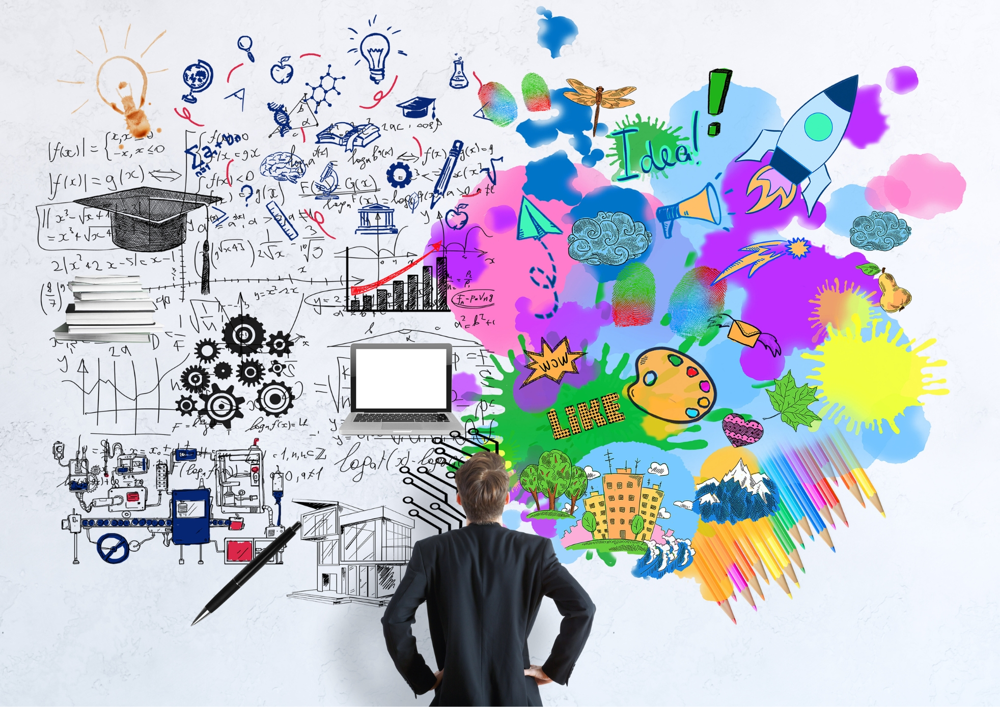
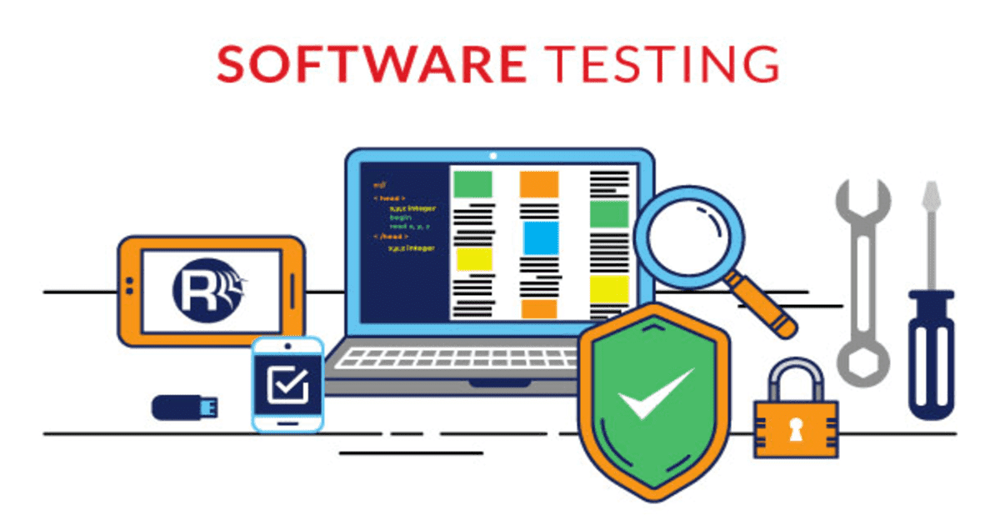
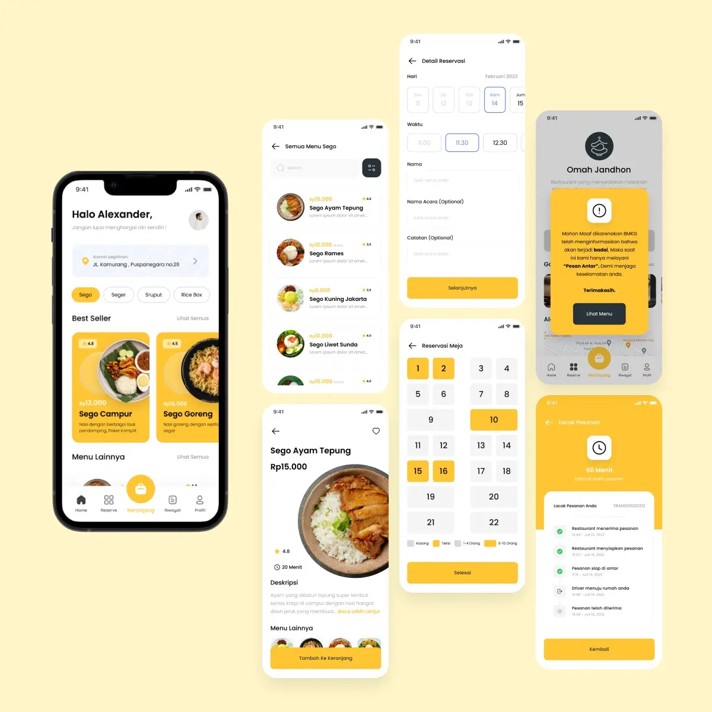

Pemanfaatan Teknologi Digital untuk Meningkatkan Kualitas Pendidikan di Indonesia
Oleh Siti Nur Aisyah | 27 Oktober 2026 | 5 menit membaca

Perkembangan teknologi digital membuka peluang bagi mahasiswa untuk menciptakan berbagai inovasi yang bermanfaat bagi masyarakat.
Saat ini, teknologi tidak hanya digunakan untuk berkomunikasi dan mencari informasi. Teknologi juga dimanfaatkan untuk mengembangkan layanan pendidikan, kesehatan, transportasi, hingga pengelolaan usaha kecil.
Sejumlah mahasiswa mulai mengembangkan aplikasi yang dapat membantu masyarakat menyelesaikan permasalahan sehari-hari. Proses pengembangan tersebut melibatkan penelitian, diskusi, perancangan antarmuka, dan pengujian.
Kolaborasi Menjadi Kunci Inovasi
Pengembangan sebuah produk digital membutuhkan kerja sama dari berbagai bidang. Mahasiswa perlu memahami kebutuhan pengguna sekaligus menguasai teknologi yang digunakan.
Inovasi yang baik bukan hanya menggunakan teknologi terbaru, tetapi juga memberikan manfaat nyata bagi penggunanya.
Tahapan Mengembangkan Produk Digital
Untuk menghasilkan produk yang bermanfaat, mahasiswa dapat mengikuti beberapa tahapan berikut:
- Mengidentifikasi masalah yang dihadapi pengguna.
- Mengumpulkan informasi dan kebutuhan kebutuhan.
- Membuat desain serta rancangan aplikasi.
- Melakukan pengujian dan memperbaiki kekurangan.
- Mengevaluasi manfaat produk setelah digunakan.

Galeri Kegiatan
Berikut beberapa tahapan dalam proses pengembangan inovasi digital mahasiswa.

Mempersiapkan Generasi Inovatif
Melalui berbagai proyek dan kegiatan penelitian, mahasiswa dapat meningkatkan keterampilan teknis, komunikasi, dan kemampuan memecahkan masalah.
Dukungan kampus, dosen, dan mitra industri juga berperan penting dalam membekali mahasiswa menghadapi dunia kerja dan menyesuaikan dengan kebutuhan masyarakat.